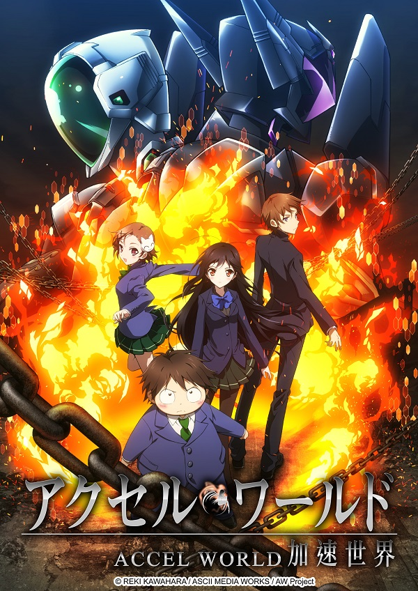

AnimeInterester
加速世界

故事簡介
2046年，由於被稱作「神經連結裝置」的發明，大多數的日常活動都可以藉此在虛擬的網路上進行。但是，就算是如此進步的年代，也無法讓「被霸凌的孩子」不再出現…。 有田春雪也是處在學校階級中最底層的其中一人，平時一直躲在校內區網的角落，獨自玩著壁球遊戲。某一天，校內的風雪人物－黑雪公主，突然前來向他搭話…『少年，想不想加速到更快的境界？』…
製作人員
原作：川原礫
原作插畫：HIMA
導演：小原正和
系列構成：吉野弘幸
角色設計：愛敬由紀子
動作監督：椛島洋介
メカデザイン：神宮司訓之 / 沙倉拓実 / 大河広行 / 山根まさひろ
セットデザイン：青木智由紀 / イノセユキエ / 佐藤正浩
主要動畫師：田畑壽之 / 阿部望
美術監督：池信孝 / 二嶋隆文
CGプロデューサー：井野元英二
撮影監督：佐藤敦
色彩設計：横山さよ子
剪輯：今井大介
撮影：J.C.STAFF
美術：スタジオ・イースター
CG：オレンジ
音響監督：鶴岡陽太
音響制作：楽音舎
音樂：MintJam / onoken / 大嶋啓之
音樂制作：ワーナー・ホーム・ビデオ / ミュージックブレインズ
プロジェクト統括：GENCO
製作：AW Project
聲優名單
黑雪姫：三澤紗千香
有田春雪：梶裕貴
倉嶋千百合：豐崎愛生
黛拓武：淺沼晉太郎
Ash Roller：鈴村健一
若宮惠：戸松遥
各集標題
| 話數 | 標題 | 話數 | 標題 |
|---|---|---|---|
| 1 | Acceleration；加速 | 13 | Violation；侵入 |
| 2 | Transformation；變形 | 14 | Arrestation；策略 |
| 3 | Investigation；探索 | 15 | Destruction；毀滅 |
| 4 | Declaration；告白 | 16 | Imagination；想像 |
| 5 | Aviation；飛翔 | 17 | Fragmentation；分裂 |
| 6 | Retribution；報應 | 18 | Invitation；挑戰 |
| 7 | Restoration；修復 | 19 | Revolution；變遷 |
| 8 | Temptation；誘惑 | 20 | Domination；統治 |
| 9 | Escalation；激化 | 21 | Insurrection；起義 |
| 10 | Activation；出擊 | 22 | Determination；決心 |
| 11 | Obligation；宿命 | 23 | Consolidation；羈絆 |
| 12 | Absolution；寬恕 | 24 | Reincarnation；再生 |